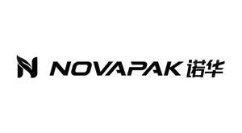

Trade Mark Journal No.2025/017 25 April 2025
UK00004185087 7 April 2025 (7,16)

- Class 7
- Mixing machines; Belt conveyors; Threading machines; Bottle filling machines; Bottle washing machines; Shovels, mechanical; Paring machines; Knives being parts of machines; Spin dryers [not heated]; Centrifugal machines; Loading ramps; Lift belts; Fleshing machines; Labellers [machines]; Finishing machines; Fodder presses; Chaff cutters; Meat choppers [machines]; Meat mincers [machines]; Washing apparatus; Steam engines; Packing machines; Kneading machines; Pneumatic tube conveyors; Food preparation machines, electromechanical; Food processors, electric; Vegetable spiralizers, electric.
- Class 16
- Wrappers [stationery]; Wrapping paper; Packing paper; Plastics for modelling; Modelling materials; Numbering apparatus; Plastic film for wrapping; Blank paper computer tapes for recording programs; Bookbinding material; Bags [envelopes, pouches] of paper or plastics, for packaging; Tablemats of paper; Plastic bubble packs for wrapping or packaging; Sheets of reclaimed cellulose for wrapping; Garbage bags of paper or of plastics; Bottle wrappers of cardboard or paper; Viscose sheets for wrapping; Plastic cling film, extensible, for palletization; Packaging material made of starches; Absorbent sheets of paper or plastic for foodstuff packaging; Humidity control sheets of paper or plastic for foodstuff packaging; Packing [cushioning, stuffing] materials of paper or cardboard.
Shanghai Kouhan Industrial Co., Ltd.
Representative: QUN CHI